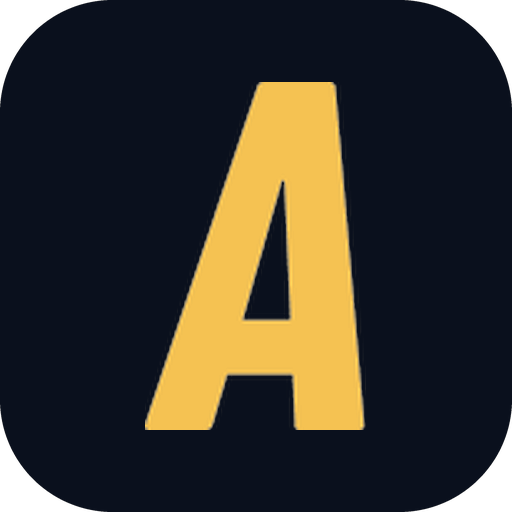

01Loose coupling
Every API gets built as decoupled as I can manage. Some land on a clean architecture, others on a plain layered one, but a controller never learns how the data is stored.
I build the half of the product nobody sees: request handling, database schemas, background jobs, and integrations that have to stay correct on the worst day of the month. Nine years of it, now as senior backend engineer on fraud and trust infrastructure at Kredibel, and tech lead of Tunelab on the side.
curl -s https://rezajuliandri.my.id/me
Nobody opens an app to admire a well-normalised schema. They open it because the thing loaded, the number was right, and the request they sent last night actually went through.

I work on the parts of software most users never see but rely on every day: REST APIs, automation pipelines, database performance, and the glue that keeps data flowing reliably between services.
I've been at Kredibel since 2018, working on fraud and online trust for an audience in the millions. I started part-time as a software engineer and I'm now senior backend engineer. Most of my time goes to relational data modelling, API design, query and index tuning, auth and token handling, and drawing boundaries between systems so that one team's bad day doesn't become everyone's.
Since late 2025 I've also been co-founder and tech lead at Tunelab, building Nada, which is where I get to own the whole stack: a provider-agnostic sync layer, and the analytics, email, and content infrastructure behind it, all running on Cloudflare Workers. Along the way I've interned on the financial services team at Traveloka and built an English assessment platform for the Indonesian civil aviation academy at Arxist.
I also teach, across three programs: Bangkit Academy, a joint program from Google, GoTo, and Traveloka, plus Tempa and Asah, both led by Dicoding. Well over a hundred students in mobile and backend development so far, which is the fastest way I know to find out whether you actually understand something.
Two shapes I keep coming back to. One sits on servers behind Nginx, with Laravel doing the work and PostgreSQL and Redis behind it. The other lives entirely on Cloudflare's edge. Different tools, same job.
Every API gets built as decoupled as I can manage. Some land on a clean architecture, others on a plain layered one, but a controller never learns how the data is stored.
Schema changes land next to live feature work, so every one ships with a migration strategy and a cutover safeguard. Normalising profile and watchlist data meant reshaping tables without asking the team to stop.
The failure path gets the same care as the happy path. JWT handling, refresh token rotation, and masked errors, so that a stack trace never turns into a disclosure.
Controller tests and 80%+ automated coverage are not a badge; they are what makes shipping continuously survivable. Regressions should be caught by the suite, not by users.
Not a style guide about brace placement. A standard about cognitive load: one responsibility per function, one level of abstraction, and nothing left for the person reading it in six months to hold in their head. Same rules in review as in my own branches.
public function handle($request)
{
if ($request->has('email')) {
$user = User::where('email', $request->email)->first();
if ($user) {
if ($user->status === 'active') {
$rows = [];
foreach ($user->accounts as $account) {
if ($account->verified_at !== null) {
$rows[] = ['id' => $account->id];
}
}
return response()->json($rows);
}
}
}
return response()->json(['error' => 'not found'], 404);
}
public function verifiedAccounts(Request $request): JsonResponse
{
$user = $this->users->activeByEmail($request->email);
if (! $user) {
return $this->accountNotFound();
}
return response()->json(
$this->accounts->verifiedFor($user)
);
}
Backend work photographs badly, so the screenshots are the least interesting part; the stack and the shape underneath each one are the point. Click any image to enlarge it.
A fraud and trust platform helping Indonesian consumers avoid scams, and helping businesses onboard verified users in line with regulation.
platform totals, published on kredibel.com
The product I co-founded and lead the engineering for: composing music by humming. The sync layer is provider-agnostic by design, with remote sync interfaces, cursor-based state, an offline queue, and conflict snapshots, all running on our own Cloudflare Workers backend.
product totals to date

A companion app for arcade trading card collectors: catalogue what you own, scan a barcode to log it, and keep a record of every session. Built and shipped alone, from the Cloudflare backend to the Android client, with a payment gateway live in production on an approved merchant account.
product totals, two months in
An assessment platform for Politeknik Penerbangan Indonesia Curug, digitising placement and evaluation of English proficiency for cadets.
A final project connecting pet owners with adopters. One API serving two very different clients, which is where most of the interesting decisions lived.
A clinic management tool for the Inspectorate General of Indonesia's Ministry of Education & Culture, covering medical records, lab tests, and medication inventory in one place.
Bangkit Academy 2022 capstone, built with Machine Learning and Cloud Computing students. Selected among the top 53 projects across the cohort.
An online clothing shopping concept with visual product search and personalised recommendations.
A home-workout companion with guided activities, consultation, and a reward loop to keep users consistent.
A pandemic-era donation app for medicine, vitamins, oxygen, and blood, matching benefactors with those in immediate need.
One app for stocks and crypto: real-time prices, charts, market cap, and price movement in a single unified portfolio view.
An app that makes it easier for travellers to discover and visit cultural destinations nearby, surfacing context rather than just coordinates.
Production systems, and the classrooms that kept me honest about how they work.
PT. Kredibel Teknologi Indonesia · Remote
Tunelab
Anadex · NgideIn
Tempa, led by Dicoding · Remote
Asah, led by Dicoding · Remote
Bangkit Academy, led by Google, GoTo & Traveloka · Remote
Traveloka · Financial Services
Universitas Multimedia Nusantara
Arxist
Google for Developers · Jakarta
Preparing the presentation material and checking the equipment before an event starts, then keeping the session running to schedule on the day, in constant coordination with the live streaming team.
OpenWISP · open source
OpenWISP is an open-source network management system for building low-cost networks. As a mentor I sat on the reviewing side of the contest.
OpenWISP · open source
The year before mentoring, I was on the other side of it: 26 completed tasks against the OpenWISP codebase, and the run that ended in a Grand Prize.
Highlighted items are the ones I'm fastest in; the rest I'm comfortable being dropped into. Tools are the easy part; the hard part is deciding what not to build.
Catalyst Program (Nada / Tunelab) · Jakarta · Hybrid
A six-month follow-on program for teams taking an Apple Developer Academy project toward a real business. I went through it with Nada.
Bali · Cohort 2025 · iOS Developer Internship
A ten-month intensive focused on iOS development and the entrepreneurial side of shipping native apps end to end, built around Challenge Based Learning with cross-functional student teams.
B.Sc. Information Systems · GPA 3.85 / 4.00
Information systems with a heavy dose of software engineering, algorithms, and data foundations.
Mobile Development Cohort · Google, GoTo & Traveloka
Career-readiness program focused on in-demand mobile skills: Kotlin, fundamental and intermediate Android, UX design, SOLID principles, and career development. One of three thousand students in the cohort; graduated with Distinction (top 10%) on the Mobile Development path and served as a peer tutor for Android Fundamentals. I came back as a mentor in 2023 and an instructor across both 2024 cohorts.
Got a system that's outgrown its first design?
Let's talk.
Backend and platform work, API design reviews, the occasional teaching engagement. Happy to talk about any of it. I read everything that isn't a recruiter template.
curl -s rezajuliandri.my.id/contact
{ "email": "me@rezajuliandri.my.id", "github": "ppabcd", "linkedin": "rezajuliandri", "timezone": "Asia/Jakarta (UTC+7)", "replies": true }